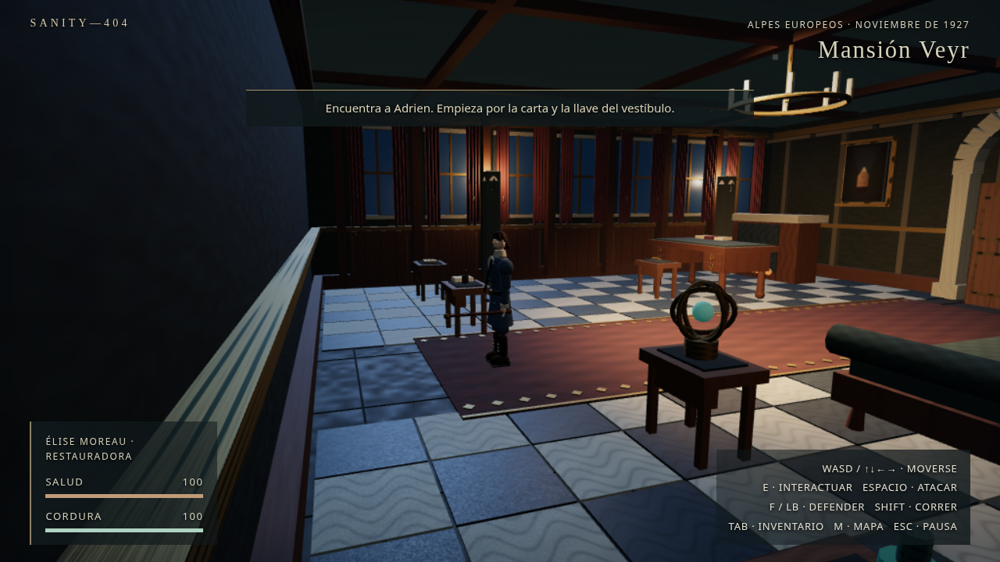
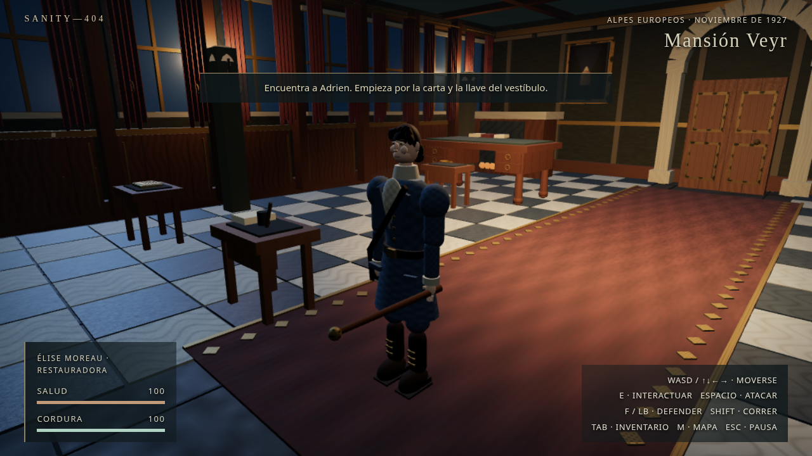
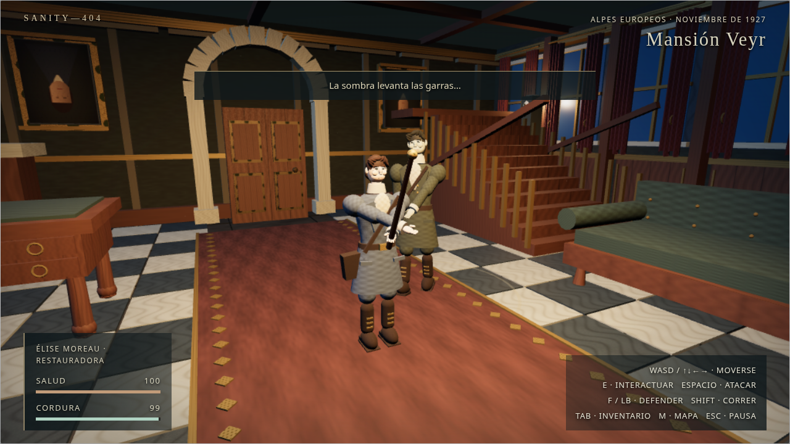
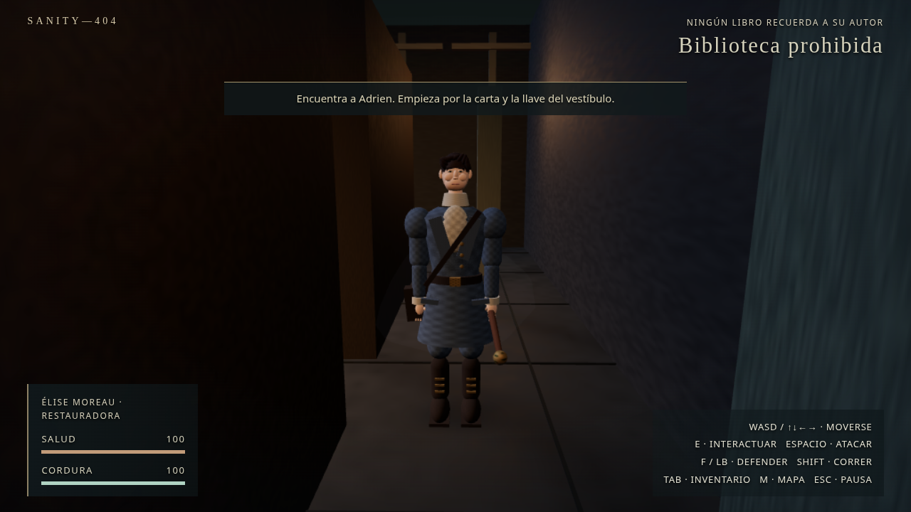
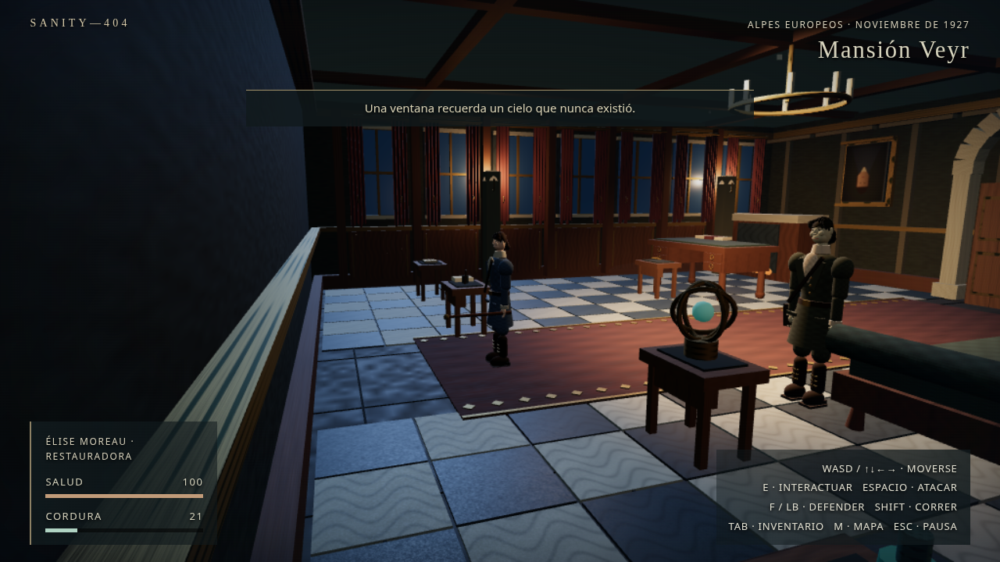

Capturas reales de navegador. Entrada del mismo escenario y posición del protagonista; cámara rediseñada. Antes: 800 × 600, calidad Media. Después: 1280 × 720, calidad Baja. La resolución y calidad difieren: esta comparación muestra composición, no una medición aislada de materiales.




